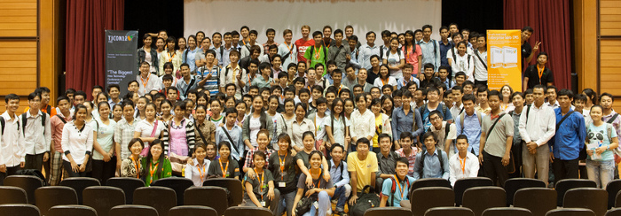
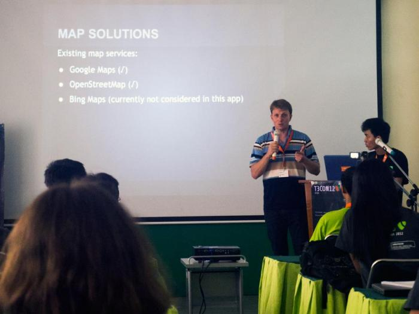
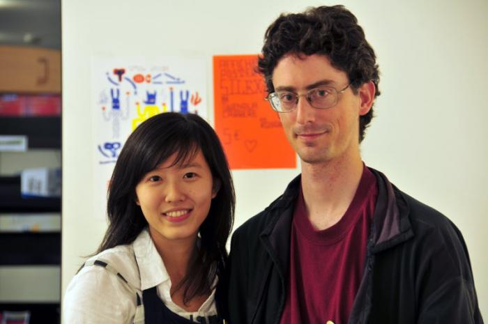
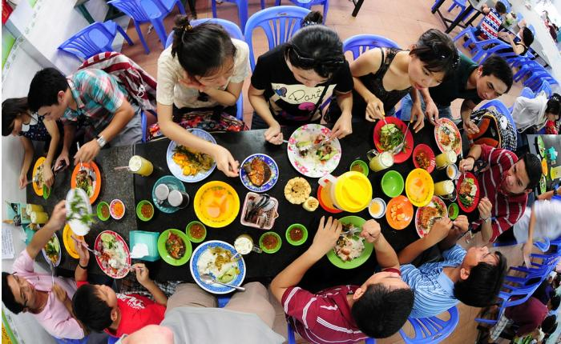
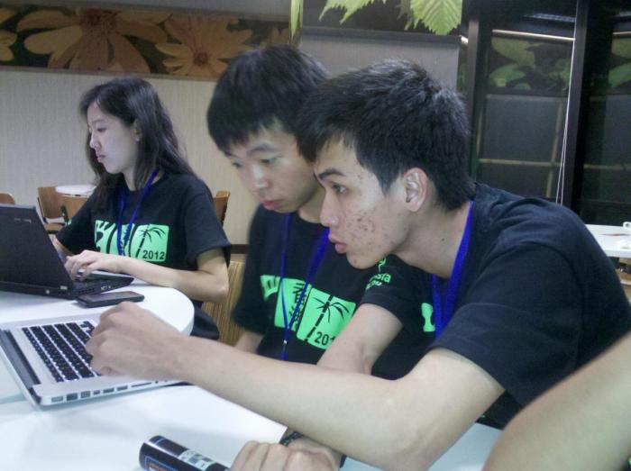
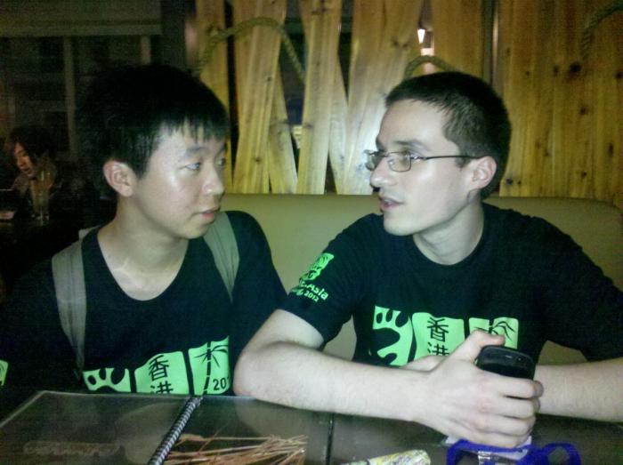
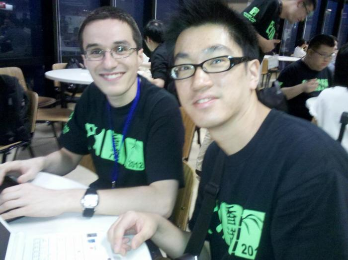
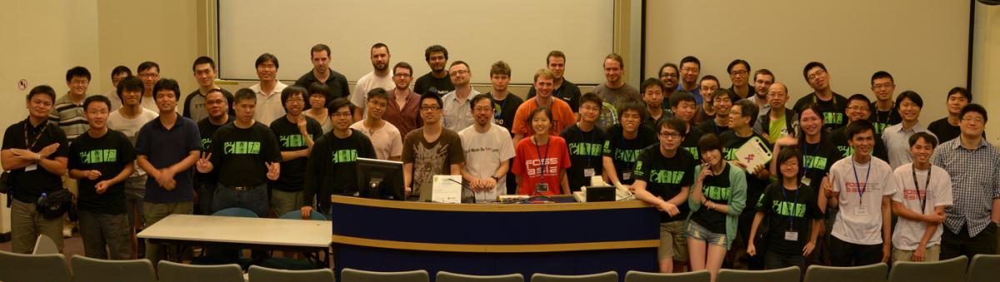
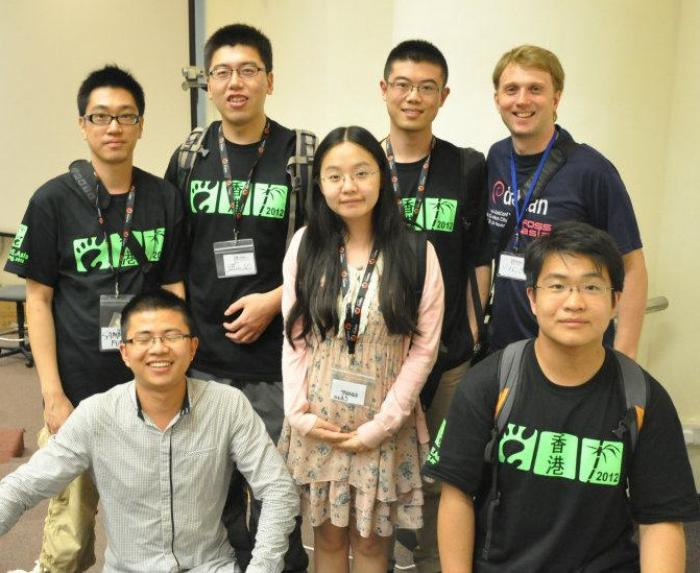

Blog của Hong Phuc
TYPO3 Conference in Phnom Penh
Thank you for joining the first ever TYPO3 conference in Asia and inspiring people to Share!
I can only agree with this finishing statement at the first TYPO3 event in the region. It was truly inspiring. The T3Con took place in Cambodia, the Kingdom of Wonders, from Friday, 17 August to Sunday, 19 August 2012.
The event was organized by Dominik Stankowski and Rebecca Stankowski from Web Essentials with the support of the international and local community. Great job! Well done!
T3Con Community Meet up in Phnom Penh
TYPO3, is one of the top Enterprise Content Management System. T3CON12 ASIA event provided the latest trends in Web and Mobile Development. It was a unique opportunity in South-East-Asia to connect with successful international and local technology companies, innovative tech start-ups, international web developers and mobile experts.
The conference was held at the Cambodia-Japan Cooperation Center (Royal University of Phnom Penh).
Conference Highlights included
- Keynote speech by TYPO3 founder Kasper Skårhøj from Denmark
- 2-day conference with sessions from speakers around the world
- Special Student' s day with TYPO3 tutorials and workshops
- Training Week with expert web developers
- Friday Social Event at Kingdom Breweries: Barbecue and Kingdom Beer by a German Master Brewer in a wonderfully restored factory
- TYPO3 Certification Exam
- Pre-conference meet-up at the famous FCC (Foreign Correspondence Club) with view over Mekong and Tonle Sap
T3CON12 ASIA has brought people together from around the world. Asian representatives from Japan, Indonesia, India, China, Vietnam and of course Cambodia joined, together with TYPO3 enthusiasts from Europe and North-America.
Mario Behling and Hon Nguyen at T3Con Phnom Penh (Photo by Fumiki Kanno)
Links:

Pdfinator v0.1 - Convert Images to PDFs
There are number of ways to generate pdf's from different file types. LibreOffice offers pdf generation from office documents for a long time and there is a simple terminal command to convert images to pdfs with ImageMagick.
But nevertheless there are instances, where people would like to have a simple pdf converter with a graphical interface. Tom Lechner and I sat together and worked on this idea together with input from Mario Behling.
So, here it is: Pdfinator
Create a pdf from a number of images. It uses ImageMagick convert to make non-jpegs into jpegs for inclusion.
You find the code on github here: https://github.com/mariobehling/pdfinator
We will be offereing packages for different Linux distributions soon too.

For your reference there is also this way, if you want to try to generate PDFs or images from command line.
You simply follow the steps below:
1. Install ImageMagick e.g. in Ubuntu – https://help.ubuntu.com/community/ImageMagick
2. Open the terminal and go to the directory of the files, e.g. /home/fossasiauser/Documents
- cd /home/hongphuc/Documents
3. To convert pdfs to images, use the terminal and type
- convert hongphuc.pdf hongphuc.jpg
4. To convert images to pdfs use the following command
- convert *.jpg hongphuc.pdf
Tom Lechner Libre Graphics Artist and Developer in Vietnam
We invited Tom Lechner, Libre Graphics artist and developer of the desktop publishing software Laidout, to spend the summer vacation with us in Vietnam to work on some Libre Graphics projects together and to work on training materials.
Hong Phuc Dang and Tom Lechner
Many designers hesitate to switch to Libre Graphics tools as they have been mainly trained with proprietary tools.
We often hear from designers that for example Gimp does not offer the same features as Photoshop. Well, rather than thinking to exchange an application designers should also think about opening up the way they creatively work. In fact Open Source tools can offer even more possibilities to be creative, but you need to stop thinking in categories of programmes or applications. Open Source programmes can incorporate new features easily by including existing libraries.
In the Linuxworld there are many tools available that can be accessed by command line as well. You could write your own script and change an enourmeous amount of images. Well, those are the few things we are exploring together with Tom this summer.
Vietnam Impressions by Libre Graphics Artist Tom Lechner
Links:
* Tom Flickr Stream for Vietnam: flickr.com/photos/tomlechner/sets/72157630879789412/with/7865406572/
* Website: tomlechner.com
How to create a Fedora spin - Developer Meet Up in Hong Kong
Hon Nguyen (Vietnam), Dicky (Hong Kong), Hong Phuc (Vietnam) (from right to left)
Dicky (Hong Kong) and Mathieu Bridon (France)
At our meet ups at GNOME.Asia in Hong Kong it was great to meet developers from different continents. One thing we were particularly interested in is, how to create a custom Linux based on Fedora Linux.
Well, we were lucky to meet Mathieu Bridon (Blog). There are some pictures below. Even though some pictures might look just like socializing in a pub, we actually took quite late until the eve to learn about using Kickstart files to create our own custom Linux. Thank you! So the how to of Mathieu below first.
== Building your downstream distro ==
From a Fedora system:
# yum install spin-kickstarts pungi
See the kickstarts used to create the various Fedora spins in:
/usr/share/spin-kickstarts/*
Use that as examples, the actual kickstart doc is at:
http://fedoraproject.org/wiki/Anaconda/Kickstart
Then once you have your kickstart file:
# pungi -c [your kickstart file]
(see pungi -h for all the options)
== Avoiding trademark issues ==
Replace fedora-logos by generic-logos to avoid the Fedora trademarks.
Clone the git repository for the package spec file:
$ fedpkg clone -a generic-logos
$ cd generic-logos
Fetch the source tarball:
$ fedpkg sources
Make your own tarball following the layout and file names.
Rename the spec file (and change the Name: tag):
Name: xmario-logos
Version: 17.0.0
[... snip ...]
Source0: https://fedorahosted.org/released/%{name}/%{name}-%{version}.tar.bz2
See how the tarball is named like the spec file?
Rebuild:
$ fedpkg mockbuild
== Caching packages ==
1. Synchronize the whole repository:
$ yum install yum-utils
$ reposync -r fedora -r updates -p /path/to/repository_cache
2. Keep in cache the packages you install:
1. set keepcache=1 in /etc/yum.conf
2. install, update,...
3. $ find /var/cache/yum -name '*.rpm'
3. Download packages:
$ yum install yum-utils
$ yumdowloader foo
$ yumdownloader --resolve foo
Some different approaches to repo caching:
http://yum.baseurl.org/wiki/YumMultipleMachineCaching
If you need to make an install media (not live), you'll have to maintain
a trivial patch to anaconda.
$ fedpkg clone -a anaconda
$ cd anaconda
$ fedpkg prep
$ cd anaconda-$version
$ git init
$ git add .
$ git commit -m prepped
$ cp pyanaconda/installclasses/{fedora.py,xmario.py}
Replace all occurences of "fedora" by "xmario" in the file you copied,
and give it a **higher** priority (bigger number) than all other install
classes so that yours is used.
Create a patch that adds your modifications. I like to use git for that,
but you can just use the diff command if you prefer:
$ git commit -a -m "Create our install class for X-Mario"
$ git format-patch HEAD~1
$ mv 0001-*.patch ..
$ cd ..
Add the patch to the spec file header:
[... snip ...]
Patch1000000: 0001-blabla.patch
[... snip ...]
Apply at the end of %setup:
%patch1000000 -p1
Bump the "Release:" tag and add a changelog message in %changelog.
Commit to git:
$ git add 0000*.patch anaconda.spec
$ git commit -m "Bla bla bla commit message"
Rebuild:
$ fedpkg mockbuild
More about fedpkg:
http://fedoraproject.org/wiki/Using_Fedora_GIT
Mathieu Bridon and Sammy Fung (HK)
FOSSASIA community meetup at GNOME.Asia 2012
GNOME.Asia Hong Kong 2012
FOSSASIA members had a wonderful get together at GNOME.Asia 2012 in Hong Kong.
About GNOME.Asia Summit. The event is Asia’s GNOME user and developer conference, spreading the knowledge of GNOME across Asia. The event focuses primarily on the GNOME desktop and other devices that use GNOME, and also covers GNOME-based applications and GNOME development platform tools.
It brings together the GNOME community in Asia to provide a forum for users, developers, foundation leaders, governments and businesses to discuss both the present technologies and future developments.
The FOSSASIA team presented the two projects: crypto-stick and the x-mario gaming distribution.
A big thanks for this fantastic event goes to the local and global organization team and the GNOME Foundation, in particular to Max, Haggen So and Sammy Fung.
Hong Phuc Dang also received travel sponsorship from the GNOME Foundation and thus increased the participation numbers from Vietnam to three contributors.
GNOME.Asia Hong Kong 2012
Read more »